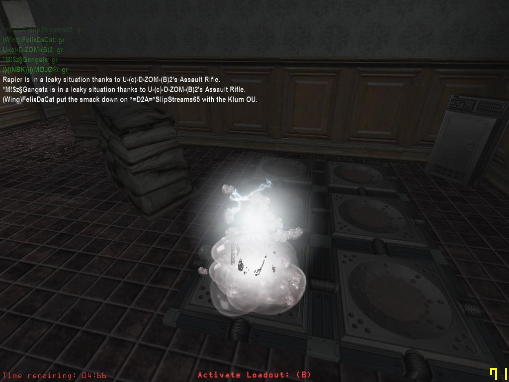
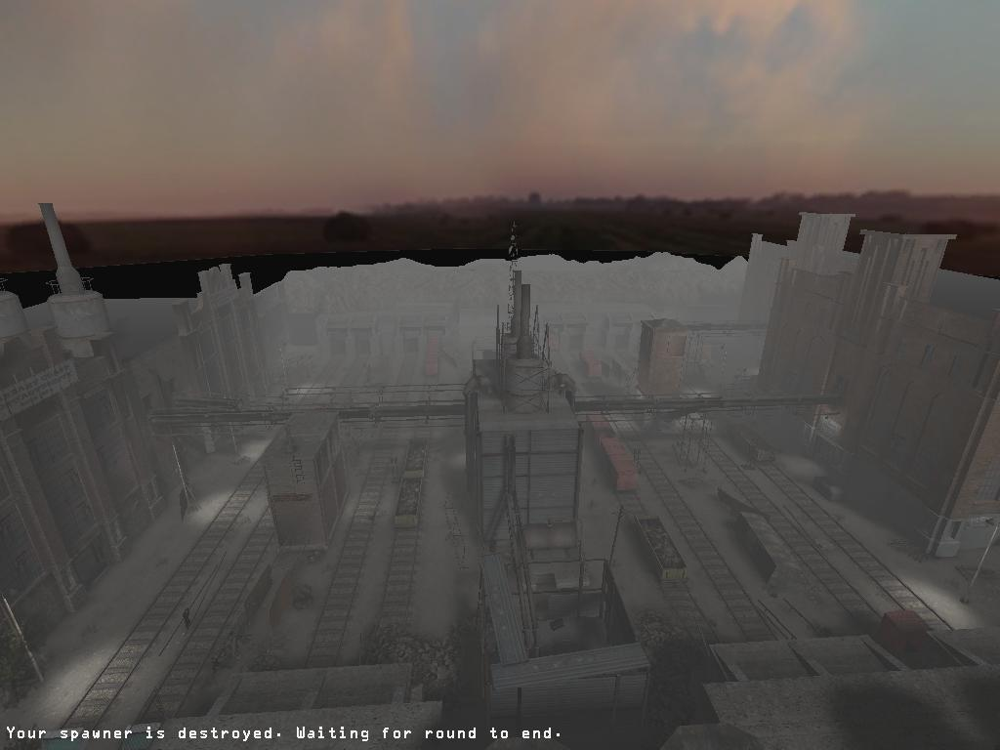
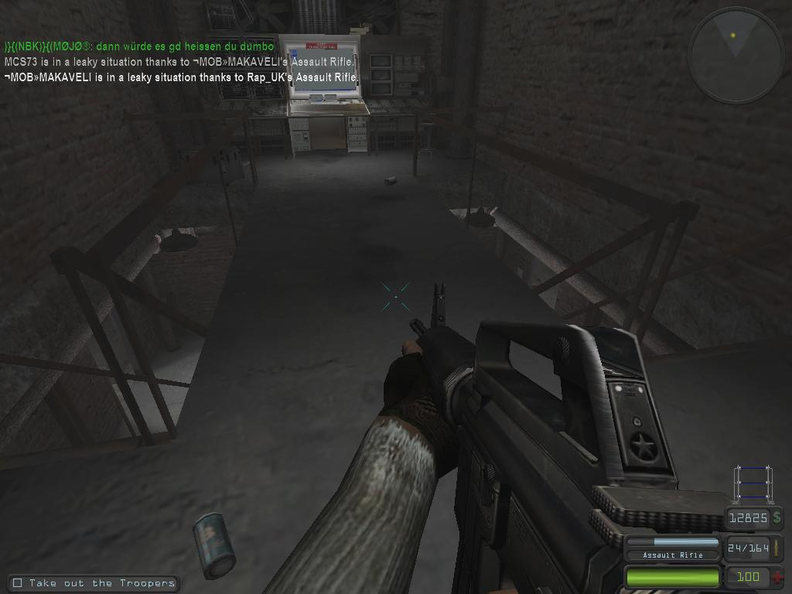
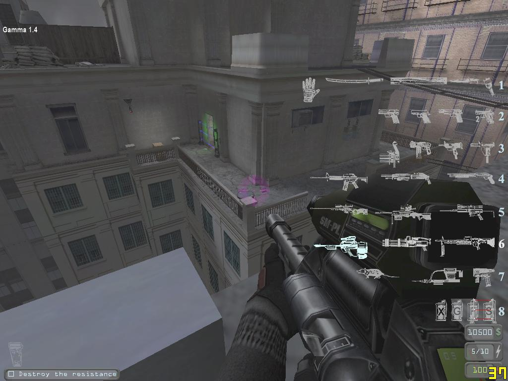
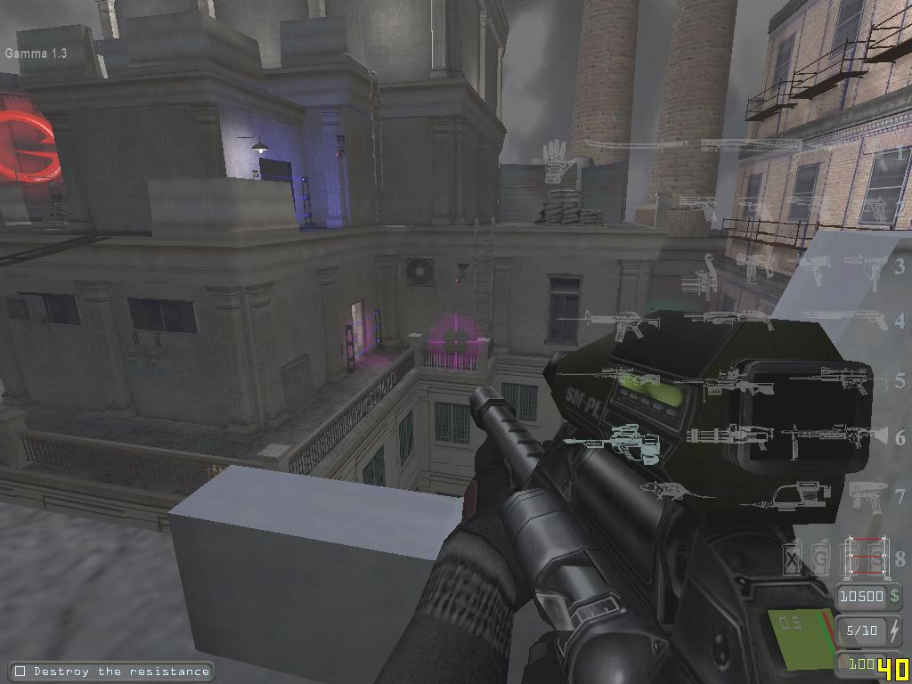
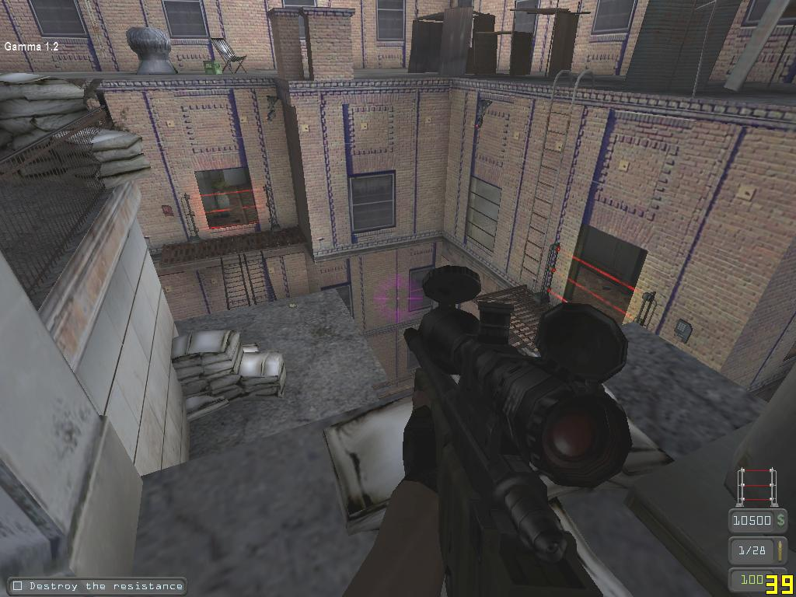
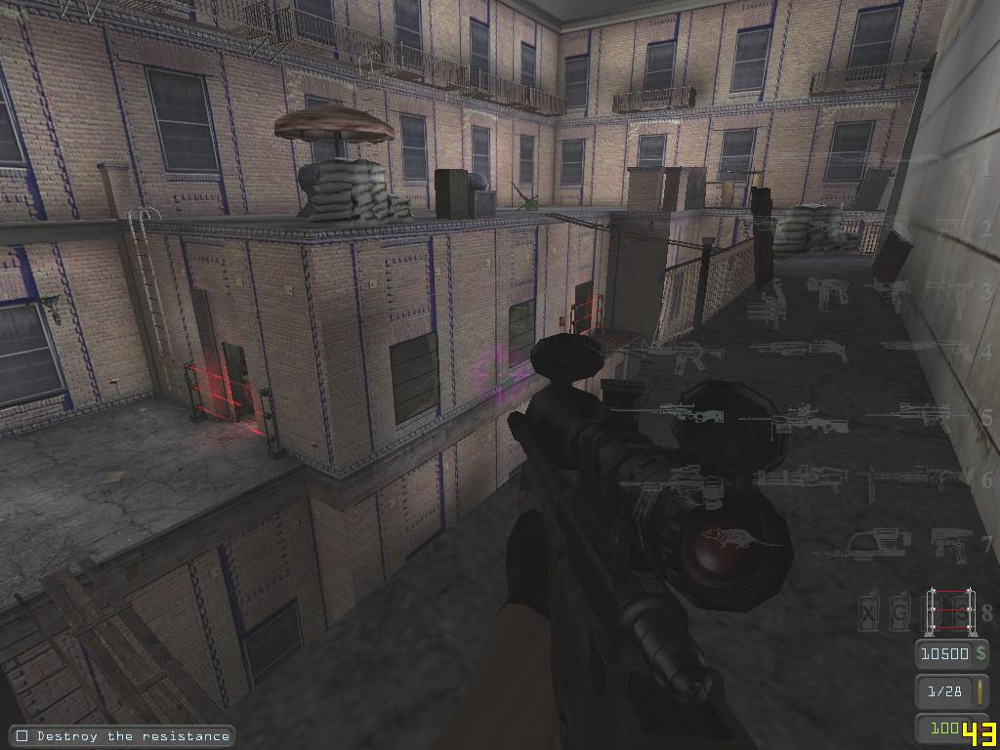

Mapping For Territories
This page is for the Territories gametype in the Unreal engine game Devastation.
Even if you dont own Devastation, I think this gametype could be a REALLY good mod for other games (hinting at someone who knows how to mod games )
For those of you who have never heard of Territories, i will give you a quick run-through. There are two teams, and each one has its own base.inside each base is a spawning machine which brings you back to life when you are killed. The base is protected by laser fences which will only open to let your team through. The map has a coderoom located somewhere,containing a mainframe computer which you use to download a special code into a handheld device. You then have to 'hack' the enemy laser fences using the codes you have, vai a keypad interact point at the fence. When the fence is disabled, you have to storm the base and destroy the spawner so the enemy team will not be coming back. you have won the game when all of the enemy has been killed. Weapons are obtained by a loadout system. When you kill an enemy you recieve a amount of points which you exchange for weapons and ammunition in a designated loadout volume inside your base. Obvoiusly the less effective weapons (micro viper, 9mm SMG, Handguns etc) are less expensive while the more effective weapons (Cobra cannon, particle laser rifle, antique machine gun etc) are more expensive.
 this is a spawner which brings you back when you are killed.the sliver box in view is the spawner box which the enemy try to destroy. this map is DTT-physcowardV42.The loadout activator ( default key B) is also shown. |
Map Size
It is very difficult to suggest a appropriate size of map, it really all depends on how you want it to be played. If you want fast-paced action go with a small map size (rivers of waste 2 or sniper IG-72 for example). This means that when you respawn you can get into the action quickly, theres no trudging all-the-way-to-the-other-side-of-the-map just to find people to kill. With a small map you must also consider that when a fence is hacked, and you kill the incoming enemies they respawn and can reach the open fence very quickly having not very far to go from thier base to yours. This can result in a never ending stream of enemies continually coming at your base and making defending very difficult. The final consideration is the simplest- its a small map, which means things will become crowded with more players. I myself have played a 6v6 clan war on rivers of waste 2 (easily the smallest territories map out there) and it was absolute chaos all the way through.
If you want more out in the open combat but you dont want your map to be too big so players can get back into action in a reasonable time then you would be looking to scale your map along the lines of DTT-Union or DTT-Nightforts or any of the other medium sized maps out there. If you are really unsure of the size to make your map, choose to make it just right- not too big or not too small. If you follow the scale of the average map then you will get a map big enough for open air combat and close up encounters....and of course SNIPING!!!! (one of my all time fauvorite activities on any map in any game)
REALLY big maps (DTT Fearzone scale) demand much more tactical combat. And remember, in a huge map its a long journey from your base to wherever the action is if you get killed. Also, if you get killed after hacking a fence then theres no way at all you can make it back to the enemy fence while it is still open, although this is a definite advantage to the defending team who would not have to worry about repeat waves of attackers.
Map Design
Theres an unwritten law that says territories maps have to be completely symmetrical. This is not true. You will want to keep your map roughly identical on each side to ensure no team has an advantage over the other but it doesnt have to be excact. A good example of this is DTT-DowntownChozo. on each side of the map there is a courtyard with elevated walkways, a few small alleyways, and a large open street outside the base. But the layout of the courtyards and bases are different,still though no team has a particualry advantageous position over the other one. so when designing a territories map you will be looking at a semi-symetrical layout, or of course you could make it completely symetrical, eg like on rivers of waste 2.
Maps with a "choke point"
This is just my personal opinion, but i feel nothing is more terrible than a map where there is only one passage from one side through to the other. Chozo may be a balanced map, but it has a choke point right at the two entrances into the coderoom. All everyone does in this map is sit on the roofs and walkways and endlessly snipe you as you come to the coderoom. Then everyone fills the place with smoke grenades and i get about 3 FPS and cant see anything. So, make a choke point if you must, but be warned its a sniper and camper haven.
Base Design
The bases themselves do not have to be identical at all, although it is nice to have 2 matching bases. The position of the laser fences is critical however. The last thing you want is a map where one base is easy to get out of and smoothly desgined, and the other one is impossible to get out of and is arranged in a totally messy manner. With that in mind,when designing a base place the laser fences in a reasonable place and make sure no base offers an advantage over the other one, even if they are assymetrical.
A small thing to note is the position of the spawner box. have it in a position where it is protected from outside snipers so they cannot in any circumstances destroy the spawner without first hacking the fence. Even if it means putting a dirty great static mesh in front of it to prevent this, believe me there is nothing worse than having your spawner destroyed while your fences are intact.
As for the fences themselves, there is no real guidelines to follow other than general scale; you dont
want a tiny doorway laser fence so everyone gets stuck trying to exit (like on rivers of waste 2), but at the same time you want to avoid a huge laser fence that makes the defending team over-anticipate where the enemy will come through.
The coderoom
ALWAYS be very careful with the location and accesibility of the coderoom. it should more or less dead in the middle of the map. never have just one entrance to the coderoom, this makes it far to easy for the team inside to defend. even with two entrances, you should be careful to avoid a coderoom that makes it impossible to attack. look at DTT-Union. the coderoom has two entrances, but because of its elevated position in is too advantageous to the team inside. you can attack and gain control of the coderoom if one or two people are in it, but if there is three or more it is simply not possible to regain control.
If you must put the exits/entrances of the coderoom right next to each other, provide some cover on at least one so the team that has just been in the coderoom has a chance of getting away without being gunned down as soon as they leave.
Real map examples of what you want to achieve
If you need some inspiration or guidance, ive slected some maps which are well designed and show these recomendations in action. i will try to add some pictures too.
DTT Union
if you can forgive the somewhat over-biased to-the-team-inside coderoom, this map is one of the most balanced out there, even though it is not identical on each side. The bases, although mostly simular, do have a slightly different geometrical layout to each other. note also the high level pipes extending out from each base to the central structure. The resistance team has two next to each other, however one of them has a break in it to make it more of a challenge to cross. the conformist team has not breaks in either of its pipes, but they are spaced wide apart at different ends of the base and only one provides access to the central structure.
(If you are really interested, yes im D2A SlipStreams65 in these screenshots.)
 DTT-Union in one shot. Surely one of the best maps of all time in my opinion.  The (Slightly biased to the defending team in my opinion) coderoom of Union. The mainframe is right in the middle of the room, in between the two stair cases. |
DTT Sniper-IG-72
No prizes for guessing what this map is about, but it is a perfect example of how totally different bases can be fair and map design doesnt have to be symmetrical. It is also the only map i am aware of that has three laser fences on each base.the triple level layout makes navigating quite interesting, and the coderoom at first glance appears to have only only one entrance, but it actually has a external entrance. Using this external entrance is a perfect example of risk vs reward. this map is set high above the city streets and a slip of the gangways means a fall to a unpleasant death. The other entrance to the coderoom is perched right on the edge of a building, and requires you to jump across a deceptively big gap to reach it. however, this other entrance gives better defensive access and can give the team inside a little surprise if you 'drop in' when they least expect it.
Now ill let the pictures do the talking... (apologies for the brightness, my screen capture hotkey is the same as the gamma adjustment)
 This is one side of the resistance base, viewed from the middle level of the base with a clear view of one fence.  The other side of the resistance base, from the same map level and showing the other two fences  Two fences of the conformist base viewed from the top level.  The other fence of the conformist base, from a nice sniping spot (no wonder no one uses that fence anymore) |
The two bases are pretty different, but this is still a very unbaised map which offers no advantages to one team over the other.
I will add to this page in the future, feel free to add to it yourself.